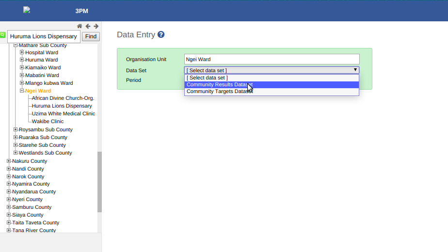
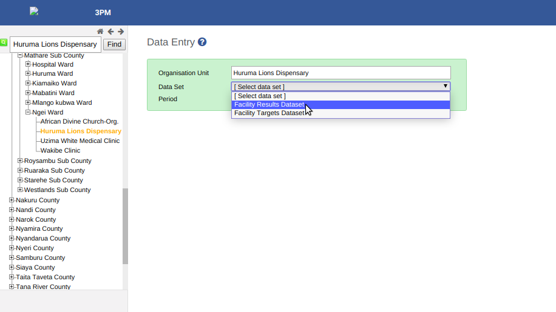
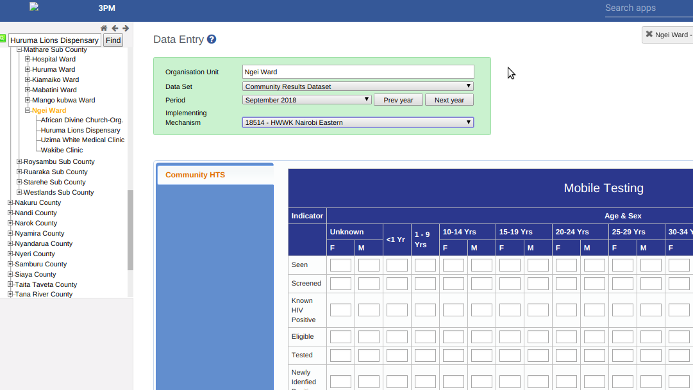
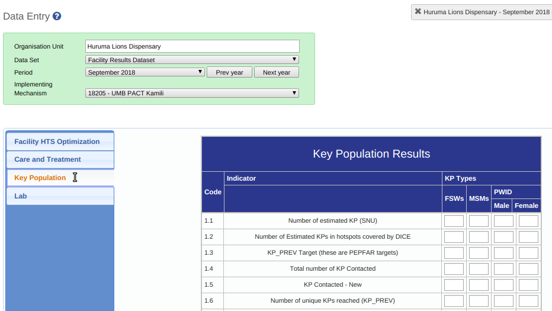

Data Entry¶
Data entry in 3PM is the process of entering data into the various datasets. It is a simple process which involves accessing the Data Entry app.
When the data entry page has loaded, you select the organization unit from the left pane. If you intend to report for a facility, select the facility and if you intend to report for a community, select the ward.
Select ward to enter data on the Community Results Dataset.
Select facility to enter data on the Facility Results Dataset.
Go ahead and select the Period which is the month and the Implementing Mechanism you are reporting for.
Data Entry Forms¶
Based on your selections, the data entry form is rendered on the page. You can perform data entry on the reporting points of your interest. You can navigate through HTS, CT, KP and Lab forms using the tabs on the left side of the inner pane.
When you enter data, the entry cell turns yellow when waiting to be saved on the server, green when it is saved and red when saving failed. Values that had been entered previously will be displayed on the dataset.
